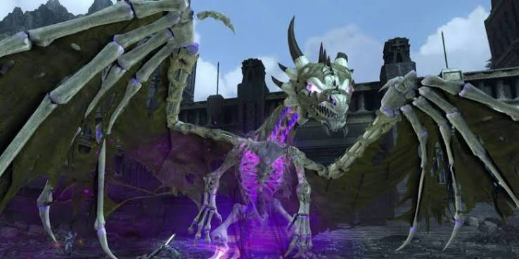

TRIAL MECHANICS
CROWN OF KELDEGONN
Manage the dragon. Manage Valindra. Try not to get launched into the abyss.

OVERVIEW
CROWN OF KELDEGONN
Crown of Keldegonn is a four-phase trial built around tank swaps, spread and stack mechanics, environmental knockbacks and alternating damage windows between Palhavorithyn and Valindra.
PHASE ONE
PALHAVORITHYN & VALINDRA
- Keep DPS away from the front of Palhavorithyn.
- Claw Swipe targets the active tank and applies Rending Bleed.
- Rending Bleed stacks and deals increasing damage over time.
- Use two tanks and swap aggro when the active tank reaches around two Bleed stacks.
- Avoid standing directly behind the dragon because Tail Lash knocks players away.
- Position around the dragon's sides or under the wings rather than directly front or back.
- Bite targets the tank and applies additional damage-over-time effects.
- Lightning Breath is a frontal attack that continues dealing damage and pushing players while they remain inside it.
SPREAD MECHANIC
NECROTIC MIASMA
- All non-tank players receive large red circles.
- Spread out and do not overlap the circles.
- Overlapping circles massively increases the incoming damage.
- The circles leave persistent corrupted zones on the floor.
- Avoid standing inside these zones after they are created.
- Coordinate placement so the arena does not become unnecessarily cluttered.
PERSONAL MECHANIC
NECROTIC BOLT IMPACT
- A player receives a large red circle with double arrows pointing downward.
- The marked player must move away from everyone else immediately.
- Nobody else should remain inside the red circle.
- A necrotic orb then travels from Valindra to the marked player.
- When the orb lands, everyone inside the area takes heavy damage.
- Treat this as a solo mechanic: marked player leaves, everyone else stays away.
ADD PRIORITY
THAYAN SUPPORTS
- At around 75% boss health, four Thayan Supports spawn.
- While any support remains alive, Palhavorithyn gains a defensive buff.
- The group also takes continuous damage while the supports survive.
- Kill all four supports quickly.
- The active tank should move the dragon away from them so DPS can identify and kill the supports cleanly.
TRANSITION
FLOATING ISLANDS
- At the end of Phase One, Palhavorithyn flies away.
- The group must cross four floating islands using the grappling mechanic.
- Move together and begin the crossing as a group.
- There is a time limit for reaching the fifth island.
- Failing to reach the destination in time wipes the group.
PHASE TWO
VALINDRA & PALHAVORITHYN
- Both Valindra and Palhavorithyn are active as separate bosses.
- One tank controls Valindra while the other controls the dragon.
- DPS should focus Palhavorithyn first.
- Valindra is shielded while the dragon is present.
- Every time Palhavorithyn loses roughly 25% health, he leaves the arena.
- This creates a short damage window on Valindra.
- Use this window to burst Valindra before the dragon returns.
- When Palhavorithyn returns, Valindra becomes shielded again.
VALINDRA MECHANICS
STACK, SPREAD & SHIELD
- Necrotic Miasma works the same as Phase One: spread the red circles apart.
- Necrotic Bolt Impact also returns: the double-arrow target moves away from everyone.
- Do not attack Valindra while she is shielded.
- Damage dealt into the shield is reflected back to the attacker.
- A player can receive a stack marker with inward-pointing arrows.
- Group tightly around that player to share the incoming damage.
- The stack mechanic hits in multiple bursts, so remain grouped until the entire sequence finishes.
- Valindra's tank must maintain aggro and absorb Necrotic Bindings.
DRAGON MECHANIC
FORCE BREATH
- Force Breath targets the active tank.
- It covers a large frontal area and applies heavy knockback.
- The tank should block the attack to avoid being thrown off the platform.
- Alternatively, stay close to the dragon and rotate out of the telegraphed area before the breath fires.
RETURN MECHANIC
LANDING IMPACT
- Before Palhavorithyn returns, one player receives a red circle.
- This marks where the dragon will land.
- Move the marker away from the rest of the group.
- Palhavorithyn lands directly on the marked location and deals heavy damage.
- Use a consistent drop location where possible so the group knows where the dragon will reappear.
PHASE THREE
PHYLACTERY
- Palhavorithyn becomes shielded.
- Ignore the dragon and attack the Phylactery instead.
- At roughly every third of its health, the Phylactery teleports to another edge of the arena.
- Follow it and continue damaging it.
- Existing corrupted zones from earlier phases remain until they expire.
ENVIRONMENTAL HAZARD
LIGHTNING GROUND
- Red circles appear on the floor and turn into lightning zones after a short delay.
- Move out before the lightning activates.
- Lightning hits can knock players backward.
- Multiple lightning zones can chain together, knocking a player from one hazard into another.
- Position carefully near the platform edge.
SOFT ENRAGE
ROAR
- Palhavorithyn uses a large Roar that pushes players away.
- Positioning the dragon near the edge of the arena can leave more safe space for the group.
- Every Roar increases the strength of future knockbacks.
- These stacks do not disappear during the encounter.
- The longer the phase lasts, the greater the risk of players being pushed off the platform.
ADD CONTROL
ADDS & THAYAN SUPPORTS
- Additional enemies spawn during the Phylactery phase.
- The off-tank should gather and control them.
- DPS can clear them while moving between Phylactery locations.
- Bone golems are particularly dangerous because of knockdowns and knockbacks.
- Thayan Supports also return.
- Focus the Phylactery first.
- Once the Phylactery is destroyed, kill the Supports before returning to Palhavorithyn.
FINAL PHASE
PALHAVORITHYN
- The final phase combines mechanics already seen throughout the trial.
- The active tank can be stunned and flung backward.
- Tanks must leave enough room behind them so they are not thrown off the platform.
- Tail Spin is signalled by the dragon twisting into an S-shape.
- Move away before the spin lands.
- Tail Spin damages and knocks back nearby players and applies a temporary damage-taken debuff.
- Claw Swipe now also has knockback.
- Tanks should block it to avoid being launched off the arena.
- Expect previous mechanics to return: Bite, Claw Swipe, Lightning Ground, Adds, Roar, Landing Impact, Force Breath, Lightning Breath, Fling and Thayan Supports.
QUICK REFERENCE
DON'T GET YEETED OFF KELDEGONN
- Tank gets Bleed stacks → swap tanks.
- Red circles on everyone → spread.
- Double-arrow bomb → take it away alone.
- Inward-arrow marker → stack and share.
- Thayan Supports → kill quickly.
- Valindra shielded → stop attacking her.
- Dragon leaves → burst Valindra.
- Landing marker → move it away from the party.
- Phylactery active → ignore dragon and kill Phylactery.
- Lightning ground → move before it activates.
- Roars make later knockbacks stronger.
- Tanks: always leave space behind you.